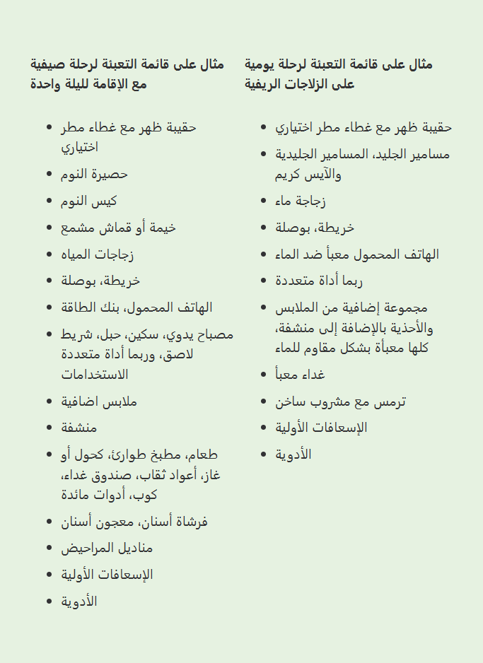

للتعبئة بكفاءة
التعبئة والتغليف
من الجيد دائماً أن تبدأ بعمل قائمة تعبئة لتتأكد من أنك تأخذ معك كل ما تحتاجه. من المهم التفكير في كيفية ترتيب الأغراض داخل الحقيبة وبأي تسلسل تعبئتها. تحتاج إلى توزيع وزن الأغراض بطريقة مناسبة. لضمان الاستقرار والتوازن، يجب وضع الأشياء الثقيلة في الأعلى داخل الحقيبة، بالقرب من الظهر. كما يجب أن تضع في اعتبارك تعبئة الأشياء التي تحتاجها كثيراً أو تريد الوصول إليها بسرعة في أماكن يسهل الوصول إليها، حتى لا تضطر لفتح الحقيبة بالكامل دون داعٍ. من أمثلة هذه الأشياء زجاجة الماء، الملابس الإضافية، أو حقيبة الإسعافات الأولية. يمكن وضع هذه الأشياء في الأعلى داخل الحقيبة أو في الجيوب الخارجية والجانبية. بعض حقائب الظهر يمكن فتحها من الأسفل لتسهيل الوصول إلى ما تحتاجه. كما يمكن وضع الهاتف المحمول، الخريطة، مكملات الطاقة أو الأشياء الصغيرة الأخرى التي تريدها في متناول يدك في جيوب المعطف أو البنطال.
ضد للماء
عندما تكون تجديف أو تتواجد على الجليد، هناك خطر أن تقع أغراضك في الماء. لذلك، في مثل هذه الحالات من المهم تعبئة الأغراض بطريقة مقاومة للماء. لهذا الغرض، توجد أكياس تعبئة خاصة محكمة الإغلاق تماماً، أو يمكنك استخدام أكياس بلاستيكية عادية. من الضروري أن تربط هذه الأكياس جيداً، ويفضل استخدام عدة أكياس داخل بعضها البعض. ولتسهيل تنظيم أغراضك، يمكنك اختيار أكياس شفافة أو أكياس بألوان مختلفة.
ماء
عندما تكون في الهواء الطلق، تفقد كمية من السوائل أكثر مما تعتقد. لذلك من المهم دائماً أن تحمل معك ماءً أو سوائل أخرى لتعويض الفاقد. عن طريق تعويض السوائل باستمرار، تتجنب خطر الجفاف الذي قد يؤدي إلى صداع، وضعف في الطاقة والتركيز. لذلك من الجيد أن تضع زجاجة الماء في مكان يسهل الوصول إليه داخل حقيبتك حتى تتمكن من شرب الماء بسرعة وسهولة. وإذا كان الجو بارداً، فالمشروبات الدافئة تساعدك على الحفاظ على دفء جسمك. ستكون رحلتك أكثر متعة وأقل إرهاقاً إذا تذكرت إحضار المشروبات معك.
إذا كنت ستطبخ، من المهم أيضاً أن تتذكر إحضار كمية إضافية من الماء، في حال احتجت إلى غلي شيء. ونظراً لأن الماء ثقيل، يمكنكم توزيع حمله بين أفراد المجموعة إذا كنتم أكثر من شخص في الرحلة.
توزيع التعبئة
الأشياء الثقيلة الأخرى التي من الجيد توزيعها بين أفراد المجموعة هي الخيمة، موقد الطهي المحمول، الطعام، وأغراض أخرى مشتركة. تأكد من أن كل شخص في المجموعة يحمل وزناً تقريباً متساوياً، أو يحمل حقيبة مناسبة لحجم وقوة جسمه. هذا لضمان ألا يضطر أي فرد إلى بذل جهد أكبر بكثير من باقي المجموعة.
